动手实践：美化 Jenkins 报告插件的用户界面
对于 Jenkins 而言，可以使用大量插件来可视化各种构建步骤的结果。有一些插件可用于呈现测试结果、代码覆盖率、静态分析等。所有这些插件通常都会获取给定构建步骤的构建结果，并在用户界面中显示它们。为了呈现这些细节，大多数插件使用静态 HTML 页面，因为这种类型的用户界面是 Jenkins 自 2007 年成立以来的标准可视化。
为了改善这些插件的外观和用户体验，有必要向前发展并合并一些现代 Java Script 库和组件。由于 Blue Ocean 的开发已经停止（请参阅 Jenkins mailing list post），因此插件作者需要自己决定，哪些 UI 技术可帮助完成该任务。但是，现代 UI 组件的种类繁多，以至于只挑选一小部分被证明是有用的并且与 Jenkins 基础 Web 技术兼容的组件是有意义的。而且，合并这样一个新组件的初始设置相当大，因此如果该工作仅需要执行一次，将会有很大的帮助。
本指南介绍了一些 UI 组件，以后所有插件作者都可以使用这些 UI 组件，从而为 Jenkins 中的报告提供丰富的用户界面。为了简化这些库在 Jenkins 作为基于 Java 的 Web 应用程序的上下文中的使用，这些 Java Script 库和组件已打包为普通的 Jenkins 插件。
在以下各小节中，将逐步介绍这些新组件。为了了解如何使用这些组件的插件，我将演示新功能，同时使用新的用户界面增强现有的 Forensics Plugin。由于 Warnings Next Generation 插件也使用这些新组件，因此您可以在 warnings 插件的文档中或在我们的公共 ci.jenkins.io 实例中看到其他示例，这些示例已经在 warnings 插件的详细信息视图中使用了这些组件。
新的用户界面插件
新的 Jenkins 插件提供了以下 UI 组件:
- jquery3-api-plugin:为 Jenkins 插件提供 jQuery 3。如其首页所述，jQuery 是一个快速、小型且功能丰富的 JavaScript 库。借助易于使用的 API（可在多种浏览器中使用），使 HTML 文档的遍历和操作、事件处理、动画和 Ajax 等事情变得更加简单。兼具多功能性和可扩展性，jQuery 改变了数百万人编写 JavaScript 的方式。
- bootstrap4-api-plugin:为 Jenkins 插件提供 Bootstrap 4。Bootstrap 自称是世界上最流行的前端组件库，用于在 Web 上构建响应式，移动优先的项目。它是一个用于使用 HTML、CSS 和 JS 开发的开源工具包。开发人员可以使用他们的 Sass 变量和 mixins、响应式栅格系统、大量的预构建组件以及基于 jQuery 构建的强大插件，快速构建其思想原型或整个应用程序。
- data-tables-api-plugin:提供 Jenkins 插件的数据表格。DataTables 是 jQuery Javascript 库的插件。这是一个高度灵活的工具，建立在逐步增强的基础上，可将所有这些高级功能添加到任何 HTML 表中:
- 上一页，下一页和页面导航
- 通过文本搜索过滤结果
- 一次按多列对数据排序
- DOM、Javascript、Ajax、服务器端处理
- 简单主题化
- 手机端兼容友好
- echarts-api-plugin:为 Jenkins 插件提供 ECharts。ECharts 是一种开放源代码的 JavaScript 可视化工具，用于创建直观、交互式和高度可定制的图表。它可以在 PC 和移动设备上流畅运行，并且与大多数现代 Web 浏览器兼容。
- font-awesome-api-plugin:为 Jenkins 插件提供 Font Awesome。Font Awesome 具有矢量图标和社交徽标，号称是网络上最受欢迎的图标集和工具包。目前，它包含 1,500 多个免费图标。
- popper-api-plugin:为 Jenkins 插件提供 Popper.js。Popper 只需一行代码即可轻松定位工具提示，弹出窗口或其他任何内容。
- plugin-util-api-plugin:这个小插件提供了一些帮助程序和基类，以简化 Jenkins 中报告程序的创建。该插件还提供了一组体系结构规则，这些规则可以包含在插件的体系结构测试套件中。
POM 文件必要的改变
为了使用这些插件，您需要将它们作为依赖项添加到插件 pom 中。您可以使用以下代码段将其全部添加:
pom.xml
<project>
[...]
<properties>
<plugin-util-api.version>1.0.2</plugin-util-api.version>
<font-awesome-api.version>5.12.0-7</font-awesome-api.version>
<bootstrap4-api.version>4.4.1-10</bootstrap4-api.version>
<echarts-api.version>4.6.0-8</echarts-api.version>
<data-tables-api.version>1.10.20-13</data-tables-api.version>
[...]
</properties>
<dependencies>
<dependency>
<groupId>io.jenkins.plugins</groupId>
<artifactId>plugin-util-api</artifactId>
<version>${plugin-util-api.version}</version>
</dependency>
<dependency>
<groupId>io.jenkins.plugins</groupId>
<artifactId>font-awesome-api</artifactId>
<version>${font-awesome-api.version}</version>
</dependency>
<dependency>
<groupId>io.jenkins.plugins</groupId>
<artifactId>bootstrap4-api</artifactId>
<version>${bootstrap4-api.version}</version>
</dependency>
<dependency>
<groupId>io.jenkins.plugins</groupId>
<artifactId>echarts-api</artifactId>
<version>${echarts-api.version}</version>
</dependency>
<dependency>
<groupId>io.jenkins.plugins</groupId>
<artifactId>data-tables-api</artifactId>
<version>${data-tables-api.version}</version>
</dependency>
[...]
</dependencies>
[...]
</project>
或者，您可以查看 Warnings Next Generation 插件或Forensics API 插件的 POM 文件，它们已经使用了这些插件。
报告的总体结构
在本节中，我将解释 Jenkins 设计的一些基础知识，即 Java 模型和相关的用户界面元素。如果您已经熟悉如何实现报告插件的相应扩展点（请参阅 Jenkins 开发人员指南中的可扩展性部分），则可以跳过本节，直接进入第 3.1 节。
Jenkins 使用 图 1 所示的静态对象模型结构来组织项目。
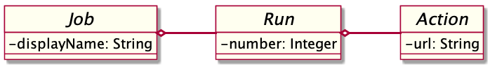
Jenkins 用户界面中的顶级项目是工作（至少是我们感兴趣的顶级项目）。Jenkins 包含多个不同类型的任务（自由式任务、Maven任务、流水线等）。
这些任务中的每一个都包含任意数量的构建（或更确切地说，是运行）。每个版本均由其唯一的版本号标识。Jenkins 插件可以将结果附加到这些版本中，例如生成工件、测试结果、分析报告等。为了附加这样的结果，插件在技术上需要实现并创建存储这些结果的操作。
这些 Java 对象在几种不同的视图中可视化，以下各节将对其进行详细描述。显示所有可用任务的顶级视图如图 2 所示。
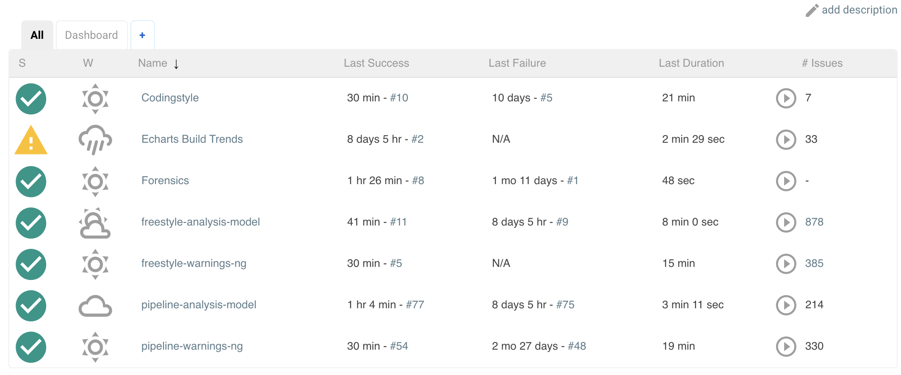
插件还可以在这些视图中提供 UI 元素，但这超出了本指南的范围。
每个任务都有一个详细视图，插件可以在其中扩展相应的扩展点并提供摘要框和趋势图。通常，在工作级别上不需要报告者摘要框，因此我仅更详细地描述趋势图，请参见第 5.5.2 节。
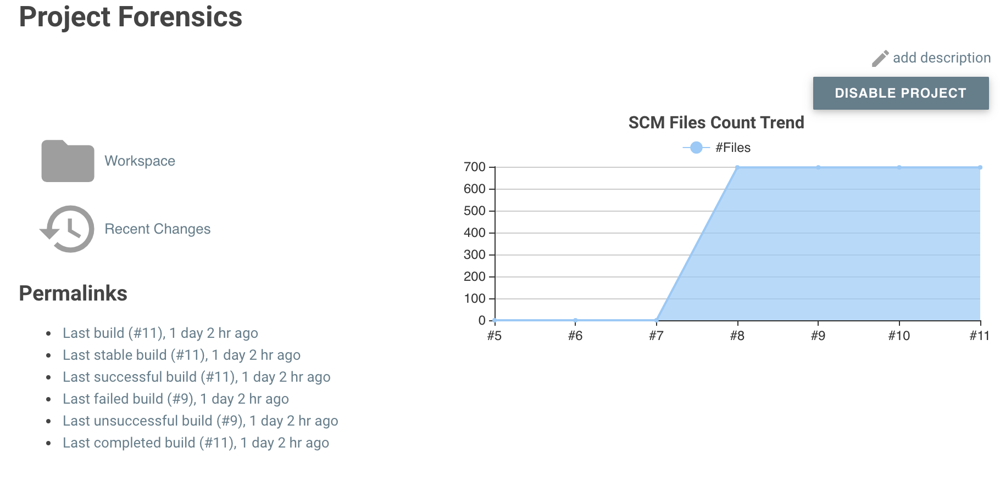
每个版本也都有一个详细视图。在这里，插件可以提供类似于“工作详细信息”视图的框的摘要框。通常，插件在这里仅显示简短摘要，并提供指向详细结果的链接，有关示例，请参见图 4。
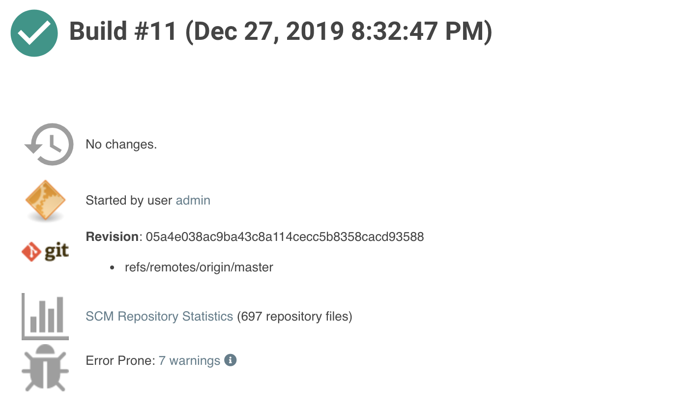
视图层次结构中的最后一个元素实际上是一个专用视图，它显示特定插件的结果。例如，有些视图可显示测试结果，分析结果等。完全由给定的插件决定应在此处显示哪些元素。在接下来的几节中，我将介绍一些新的 UI 组件，这些组件可用于以愉悦的方式显示相应的结果。
扩展 Jenkins 对象模型
由于报告程序通常以类似的方式构成，因此我用一些其他元素扩展了 Jenkins 的原始对象模型（参见图 1），因此创建或实现新的报告程序插件将更加简单。这个新模型如图 5 所示。中心元素是构建操作，它将存储插件报告程序的结果。此操作将附加到每个内部版本，并将为报告者保存（并保留）结果。每个动作的详细数据将自动存储在其他文件中，因此，如果用户从不要求提供详细信息，则 Jenkins 的内存占用空间可以保持较小。另外，该动作还用于简化项目动作和趋势图的创建，请参见第 5.5.2 节。
Git Forensics 插件
本教程中的元素将全部在新的 Forensics API 插件中使用（实际上，该插件不是新的，它是 Warnings Next Generation 插件的依赖项）。您可以下载插件内容，并详细了解如何在实践中使用这些新组件。或者，您可以更改此插件，只是为了了解如何对这些新组件进行参数设置。
如果您将 Git 用作源代码管理系统，则此插件将以犯罪现场代码的样式（Adam Tornhill，2013 年 11 月）挖掘存储库，以确定所包含源代码文件的统计信息:
- 提交总数
- 不同作者总数
- 创建时间
- 最后一次编辑时间
该插件提供了一个新的步骤（或发布后的发布者）该步骤开始了存储库挖掘并将收集的信息存储在 Jenkins 操作中（请参见图 5）。然后，您将获得一个新的构建摘要，该摘要显示扫描文件的总数（趋势和构建结果）。从这里，您可以导航到详细信息视图，该视图在可以简单排序和过滤的表中显示扫描的文件。您还将获得一些饼图，这些饼图显示提交历史记录的重要方面。
请注意，插件的此功能仍是概念证明:此步骤的性能在很大程度上取决于 Git 存储库的大小和提交次数。当前，它会扫描每个版本中的整个存储库。在不久的将来，我希望找到一个有志于用增量扫描仪替代这种愚蠢算法的志愿者。
引入新的 UI 组件
如第 3 节所述，详细信息视图特定于插件。显示的内容以及这些元素的显示方式取决于各个插件作者。因此，在接下来的部分中，我将提供一些示例和新概念，插件可以将这些示例和新概念用作其自身内容的构建块。
现代化图标
Jenkins 插件通常不经常使用图标。大多数插件都提供了操作图标，仅此而已。如果您打算在其他地方使用图标，那么插件作者将自己留着:推荐的 Tango 图标集已有 10 多年的历史了，如今太有限了。有几个选项可用，但最受欢迎的是 Font Awesome Icon Set。它提供超过 1500 个遵循相同设计准则的免费图标:
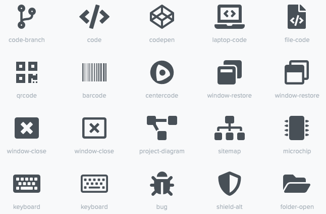
为了在插件中使用 Font Awesome 图标，您只需要依赖于相应的 font-awesome-api-plugin 即可。然后，您可以在果冻视图中使用新标签 svg-icon 来使用任何实心图标:
index.jelly
1 <j:jelly xmlns:j="jelly:core" xmlns:st="jelly:stapler" xmlns:l="/lib/layout" xmlns:fa="/font-awesome">
2
3 [...]
4 <fa:svg-icon name="check-double" class="no-issues-banner"/>
5 [...]
6
7 </j:jelly>
如果要使用 Java 代码生成视图，则也可以使用 SvgTag 类为此类图标生成 HTML 标记。
栅格布局
目前，Jenkins 在所有视图中都包含 Boostrap 栅格系统的旧版本和补丁版本（24 列）。该版本与 Boostrap4 或任何依赖 Bootstrap4 的 JS 库不兼容。为了使用 Bootstrap4 功能，我们需要用补丁版本替换 Jenkins 提供的 layout.jelly 文件，该文件不会加载损坏的栅格系统。我打算创建一个PR，以修复 Jenkins 核心中的栅格，但这将需要一些时间。在此之前，您将需要使用 Boostrap4 插件提供的 layout.jelly，请参见下文。
首先要确定的是，哪些元素应显示在插件页面上以及每个元素应占用多少空间。通常，所有可见组件都使用简单的栅格映射到可用空间上。在 Jenkins 视图中，我们具有固定的页眉和页脚以及左侧的导航栏（水平空间的20％）。屏幕的其余部分可由详细信息视图使用。为了简化剩余空间中元素的分布，我们使用 Bootstrap 的栅格系统。
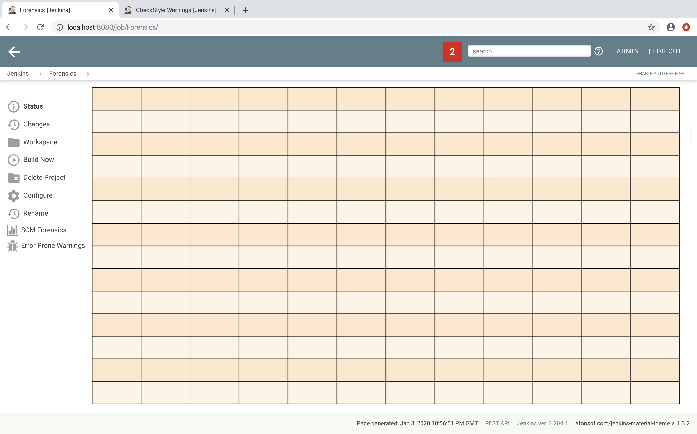
这意味着，一个视图被分为 12 列和任意数量的行。此栅格系统易于使用（但足够复杂，还可以支持精美的屏幕布局）-我在这里不做详细介绍，请参考 Bootstrap 文档。
对于取证详细视图，我们使用两行两列的简单栅格。由于列数始终为 12，因此我们需要创建两个宽列以填充 6 个标准列。为了在我们的插件中创建这样的视图，我们需要创建一个以果冻文件和相应的 Java 视图模型对象形式给出的视图。以下代码段显示了具有这种布局的视图:
index.jelly
1 <?jelly escape-by-default='true'?>
2 <j:jelly xmlns:j="jelly:core" xmlns:st="jelly:stapler" xmlns:l="/lib/layout" xmlns:bs="/bootstrap">
3
4 <bs:layout title="${it.displayName}" norefresh="true">
5 <st:include it="${it.owner}" page="sidepanel.jelly"/>
6 <l:main-panel>
7 <st:adjunct includes="io.jenkins.plugins.bootstrap4"/>
8 <div class="fluid-container">
9
10 <div class="row py-3">
11 <div class="col-6">
12 Content of column 1 in row 1
13 </div>
14 <div class="col-6">
15 Content of column 2 in row 1
16 </div>
17 </div>
18
19 <div class="row py-3">
20 <div class="col">
21 Content of row 2
22 </div>
23 </div>
24
25 </div>
26 </l:main-panel>
27 </bs:layout>
28 </j:jelly>
- 使用基于 Bootstrap 的自定义布局:由于 Jenkins 核心包含旧版本的 Bootstrap，因此我们需要替换标准的 layout.jelly 文件。
- 导入 Bootstrap4:使用辅助概念完成 JS 和 CSS 组件的导入，这是在 Jenkins 的 Stapler Web 框架中引用静态资源的首选方式。
- 整个视图将被放入一个充满整个屏幕（宽度为100％）的流体容器中。
- 视图的新行由类
row指定。附加类py-3定义了用于此行的填充，有关更多详细信息，请参见 Bootstrap Spacing。 - 由于 Bootstrap 会自动将一行分成 12 个相等大小的列，因此我们在此定义第一列应占据这 12 列中的 6 列。您也可以省略详细编号，然后 Bootstrap 将自动在可用空间中分发内容。请注意，在大多数情况下这不是您想要的。
- 第二列使用剩余空间，即 12 列中的 6 列。
- 第二行使用与第一行相同的布局。
- 第 1 行只有一列，它将填满整个可用空间。
您还可以根据屏幕的实际可见大小为一行指定不同的列布局。这有助于改善大屏幕的布局。在警告插件中，您将找到一个示例:在小型设备上，有一张可见的卡片可以在轮播中显示一张饼图。 如果要在较大的设备上打开同一页面，则会并排显示两个饼图，并且轮播会被隐藏。
卡片
当将插件信息显示为一个块时，通常会显示纯文本元素。通常，这将导致某些无关紧要的网页。为了创建一个更具吸引力的界面，在具有边框、标题、图标等的卡片中显示此类信息是有意义的。为了创建这样的 Bootstrap 卡片，新的 Bootstrap 插件提供了一个小的果冻标签，该标签简化了插件的此任务。可以通过以下方式在果冻视图中轻松创建此类卡片:
1 <bs:card title="${%Card Title}" fontAwesomeIcon="icon-name">
2 Content of the card
3 </bs:card>
在图 8 中显示了此类卡的示例。上排的卡片包含饼图，这些饼图显示了整个存储库中作者和提交数量的分布。底部的卡在数据表中显示详细信息。可视化不仅限于图表或表格，您可以在其中显示任何类型的 HTML 内容。您可以在这些卡中显示插件的任何图标，但是建议使用现有的 Font Awesome 图标之一，以在 Jenkins 的插件生态系统中获得一致的外观。
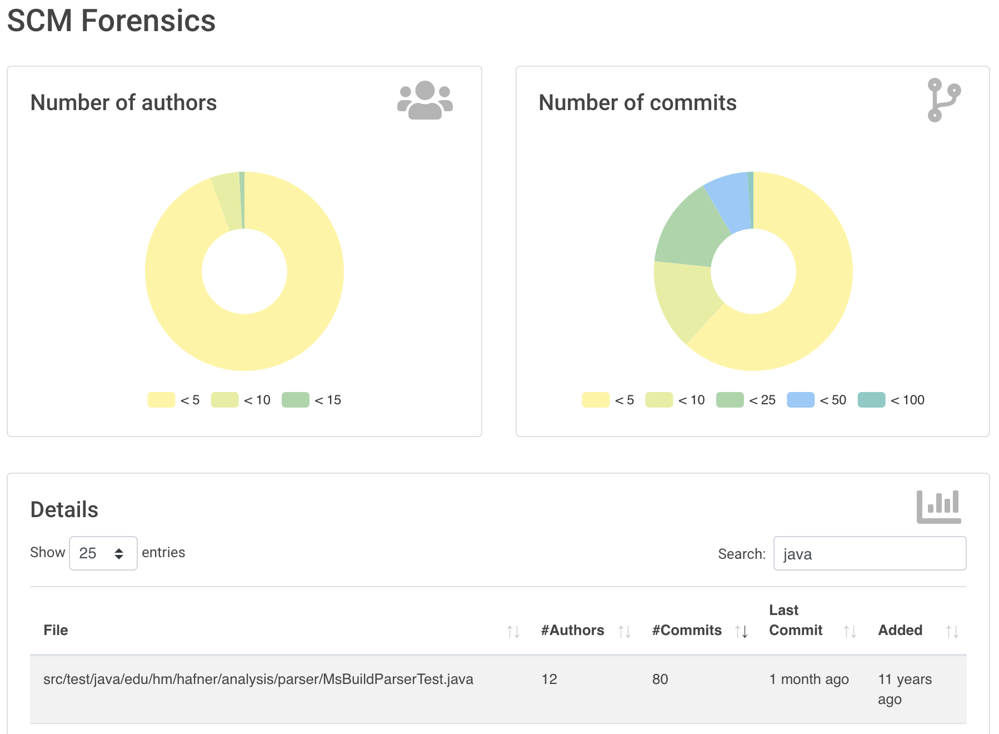
注意，卡片的大小由网格配置决定，请参见第 5.2 节。
表格
用于显示插件详细信息的常见 UI 元素是表格控件。大多数插件（和 Jenkins 核心）通常使用纯 HTML 表格。但是，如果表格应显示大量行，则使用像 DataTables 这样的更复杂的控件更有意义。使用此基于 JS 的表控件可免费提供其他功能:
- 通过文本搜索过滤结果
- 提供结果集的分页
- 一次按多列排序数据
- 使用 Ajax 调用获取表行
- 根据屏幕分辨率显示和隐藏列
为了在视图中使用 DataTables，有两个选项，您可以装饰现有的静态 HTML 表（请参见第 5.4.1 节）或使用 Ajax 填充表内容（请参见第 5.4.2 节）。
静态 HTML 内容的表格
使用 DataTables 的最简单方法是创建一个静态 HTML 表格，只需调用 datatable 的构造函数即可对其进行修饰。这种方法在 Java 和 Jelly 方面不涉及任何特殊处理，因此我认为只需遵循 DataTables 文档中的示例即可。只需确保在您的 Jelly 文件中构建了表之后，您需要使用以下代码装饰表:
<j:jelly xmlns:j="jelly:core" xmlns:st="jelly:stapler" >
<st:adjunct includes="io.jenkins.plugins.jquery3"/>
<st:adjunct includes="io.jenkins.plugins.data-tables"/>
[...]
<div class="table-responsive">
<table class="table table-hover table-striped display" id="id">
[...]
</table>
</div>
[...]
<script>
$('#id').DataTable();
</script>
</j:jelly>
- 用您的 HTML 表格元素的 ID 替换上面代码中的 ID
到目前为止，在 Forensics 插件中还没有使用过此类静态表格，但是您可以查看警告插件中显示固定警告的表，以了解如何装饰此类表。
具有基于动态模型内容的表
尽管静态 HTML 表格易于实现，但它们有一些限制。因此，遵循更复杂的方法是有意义的。通常，用户界面中的表是通过使用相应的表（和行）模型定义的。自 Java 成立以来，Java Swing 成功地提供了这样的表模型概念。我也为 Jenkins 和 DataTables 修改了这些概念。为了在 Jenkins 视图中创建表，插件需要提供一个表模型类，该类提供以下信息:
- 表的 ID（因为视图中可能有多个表）
- 列的模型（即列的编号，类型和标题标签）
- 表格的内容（即各个行对象）
您可以在 Forensics 插件中找到此类表格的示例:此处的表格列出了 Git 存储库中的文件以及相应的提交统计信息（作者数量、提交数量、最后修改、首次提交）。该表的屏幕截图如图 9 所示。
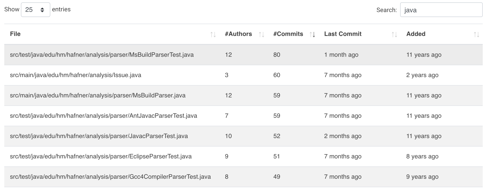
为了在 Jenkins 中创建这样的表，您需要创建一个从 TableModel 派生的表模型类。在图 10 中，显示了取证插件中相应类的图。
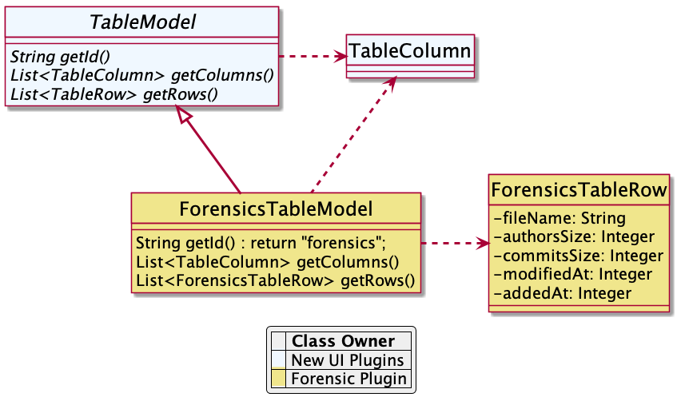
表格栏模型
表格模型类定义的第一件事是通过创建相应的 TableColumn 实例来创建可用列的模型。对于每一列，您需要指定标题标签和应在相应列中显示的 bean 属性的名称（行元素实际上是 Java bean:每一列将显示此类 bean 的一个独特属性，请参阅下一节）。您可以通过简单地提供基于 String 或 Integer 的列来使用任何受支持的列类型。
表格行内容
此外，表模型类提供行的内容。此 getRows() 方法将使用 Ajax 调用异步调用。通常，此方法仅返回 Java Bean 实例的列表，该列表提供每一列的属性（请参见上一节）。这些对象将自动转换为 JSON 对象数组，这是 DataTables API 所需的基本数据结构。您可以在 ForensicsTableModel 类的取证插件的 Git 存储库中找到一个可以正常工作的示例表模型实现。
为了在插件视图中使用这样的表，您需要使用新的 table 标签在关联的 Jelly 文件中创建表:
index.jelly
<j:jelly xmlns:j="jelly:core" xmlns:dt="/data-tables" >
[...]
<st:adjunct includes="io.jenkins.plugins.data-tables"/>
<dt:table model="${it.getTableModel('id')}"/>
[...]
</j:jelly>
- 用自己的 ID 替换上面代码的 ID
您需要为表提供的唯一参数是 model，它通常是对应的 Jenkins 视图模型类的一部分（此对象在视图中用${it}引用）。为了将对应的 Jenkins 视图模型类与表连接，视图模型类需要实现 AsyncTableContentProvider 接口。甚至更简单，让您的视图模型类派生自 DefaultAsyncTableContentProvider。此关系是必需的，以便 Jenkins 可以自动创建和绑定 Ajax 调用的代理，该代理将在创建 HTML 页面后自动填充表内容。
如果将所有这些部分放在一起，则需要定义一个类似于 Forensics 插件的模型的模型，如图 11 所示。
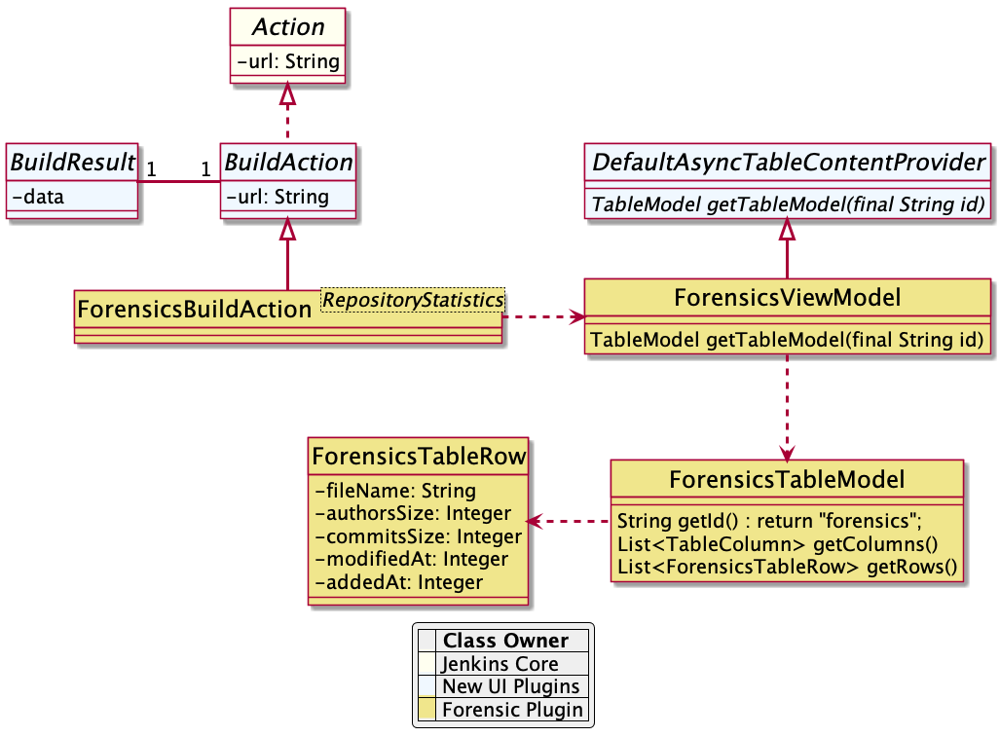
如在图 5 中已经描述的，插件需要将 BuildAction 附加到每个构建。Forensics 插件将 ForensicBuildAction 附加到构建。该操作存储一个 RepositoryStatistics 实例，该实例包含给定构建的存储库结果。该操作将所有 Stapler 请求委派给新的 Stapler 代理实例，因此我们可以使该操作清除用户界面代码。然后，此 ForensicsViewModel 类充当视图模型，为文件 index.jelly 给出的相应 Jelly 视图提供服务器端模型。
虽然这种方法在第一眼看上去很复杂，但是您会看到实际的实现部分很小。基本类已经提供了大多数样板代码，您只需要实现一些方法即可。使用此概念还提供了一些其他功能，这些功能是 DataTables 插件的一部分:
- 列的顺序会自动保存在浏览器本地存储中。
- 分页大小会自动保存在浏览器本地存储中。
- 仅当表格可见时才实际调用 Ajax 调用。因此，如果选项卡中隐藏了几个表，则仅按需加载内容，从而减少了要传输的数据量。
- 有一个选项可用于提供其他详细信息行，该行可以用 + 符号扩展，有关详细信息，请参阅 warnings plugin table。
{kind=link}
图表
插件报告程序通常还会报告从构建到构建的某种趋势。到目前为止，Jenkins 核心仅提供了一个非常有限的概念来呈现诸如趋势图之类的趋势。Jenkins 核心提供的 JFreeChart 框架是服务器端渲染引擎，可将图表创建为静态 PNG 图像，并将其包含在任务和详细信息页面中。如今，有几个功能强大的基于 JS 的图表库可供使用，它们在客户端完成相同的工作（实际上甚至做得更好）。这样做的好处是可以在每个客户端上自定义这些图表，而不会影响服务器性能。此外，您还可以免费获得许多其他功能（例如缩放，动画等）。此外，这些图表库不仅支持典型的构建趋势图，而且还支持许多其他图表类型，可用于改善插件的用户体验。这些图表库之一是 ECharts:该库具有强大的 API，并且实际上支持一个人可以想象的每种图表类型。您可以在库的示例页面上获得一些功能印象。
为了使用这些图表，可以通过导入相应的 JS 文件并在相应的 Jelly 文件中定义图表来嵌入使用该库的图表。尽管这已经很好地工作了，但是从詹金斯的构建结果中为这些图表提供相应的模型仍然有些麻烦。因此，我添加了功能强大的 Java API，可帮助在 Java 端为这些图表创建模型。该 API 提供以下功能:
- 根据构建结果的集合创建趋势图。
- 将图表类型与聚合分开，以简化图表模型的单元测试。
- 在内部版本号或内部版本日期之间切换 X 轴的类型（自动汇总当天记录的结果）。
- 将 Java 模型自动转换为 JS 端所需的 JSON 模型。
- 支持饼图和折线图（更多内容即将推出）。
这些图表可以在项目页面中用作趋势图（请参见图 3），也可以在插件的详细信息视图中用作信息图（请参见第 5 节）。
饼状图
一个简单但仍然有用的图表是一个饼图，它说明了插件数据的数字比例。在 Forensics 插件中，我使用此图表来显示 Git 存储库中源代码文件的作者或提交数量的数字比例（请参见图 8）。在警告插件中，我使用此图表显示新警告，突出警告或固定警告的数字比例，请参见图 12。
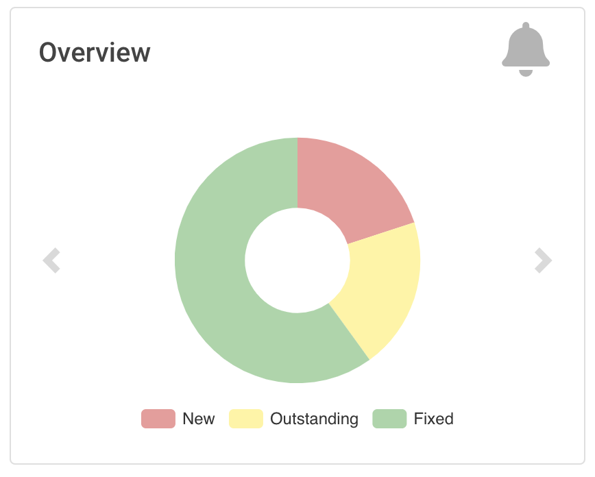
为了在您的详细信息视图中包括这样的图表，您可以使用提供的 pie-chart 标签。在以下代码片段中，您可以看到此标签的使用情况（嵌入在 Bootstrap 卡片中，请参见第 5.3 节）:
index.jelly
1 <?jelly escape-by-default='true'?>
2 <j:jelly xmlns:j="jelly:core" xmlns:c="/charts" xmlns:bs="/bootstrap">
3
4 [...]
5 <bs:card title="${%Number of authors}" fontAwesomeIcon="users">
6 <c:pie-chart id="authors" model="${it.authorsModel}" height="256" />
7 </bs:card>
8 [...]
9
10 </j:jelly>
您需要为此图表提供唯一的 ID 和相应的模型值。该模型必须是对应的 PieChartModel 实例的 JSON 表示形式。可以使用以下几行来创建这样的模型:
ViewModel.java
1 [...]
2 PieChartModel model = new PieChartModel("Title");
3
4 model.add(new PieData("Segment 1 name", 10), Palette.RED);
5 model.add(new PieData("Segment 2 name", 15), Palette.GREEN);
6 model.add(new PieData("Segment 3 name", 20), Palette.YELLOW);
7
8 String json = new JacksonFacade().toJson(model);
9 [...]
任务级别视图上的趋势图
为了显示在任务页面上呈现折线图的趋势（请参见图 3），您需要提供一个所谓的浮动框（存储在任务操作的 floatBox.jelly 文件中（请参见第 3 节））。该文件的内容非常简单，仅包含一个 trend-chart 标签:
floatingBox.jelly
1 <?jelly escape-by-default='true'?>
2 <j:jelly xmlns:j="jelly:core" xmlns:c="/charts">
3
4 <c:trend-chart it="${from}" title="${%SCM Files Count Trend}" enableLinks="true"/>
5
6 </j:jelly>
在 Java 方面，需要在 JobAction 的相应子类（浮动框的所有者）中提供图表的模型。由于趋势图的计算在服务器端也非常昂贵（需要从磁盘读取多个构建，并且需要计算有趣的数据点），因此该过程已放入单独的后台任务中。一旦计算完成，将通过 Ajax 调用显示结果。为了为插件作者隐藏这些详细信息，您应该简单地从相应的 AsyncTrendJobAction 类派生 JobAction 类，该类已经包含样板代码。因此，您的静态插件对象模型实际上会变得有些复杂:
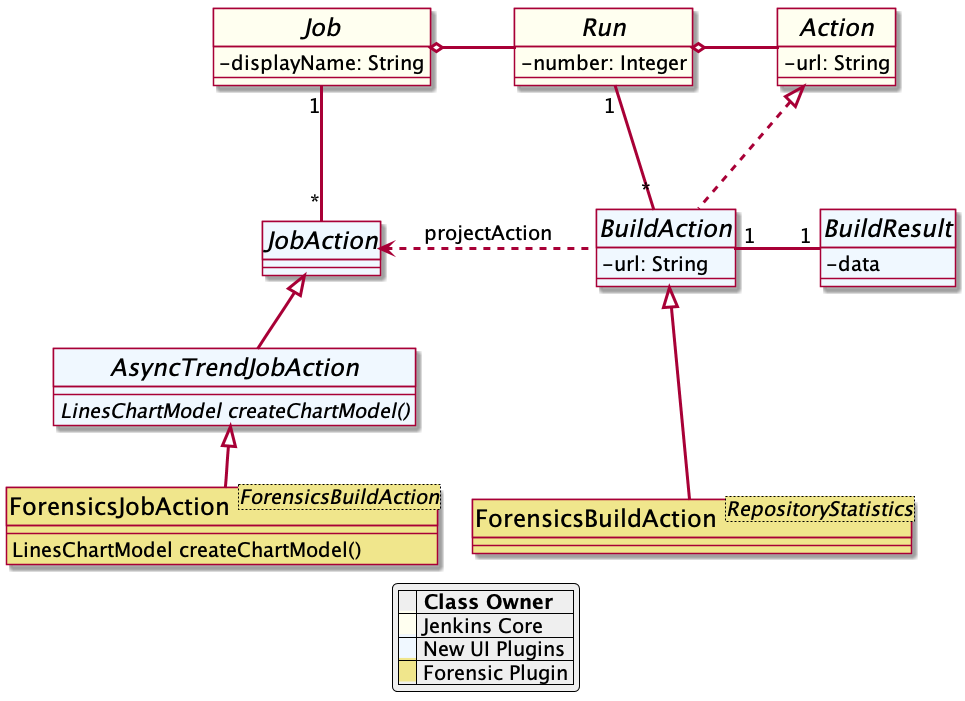
基本上，您需要实现 LinesChartModel 方法 createChartModel() 来创建折线图。该方法的实现非常简单，因为大多数艰苦的工作都是由库提供的:从最新的构建开始，您将使用构建动作的迭代器进行调用。迭代器从一个版本开始构建，直到没有更多可用结果为止（或已达到要考虑的最大构建数量）。在插件中实现的最重要的事情是如何为给定的 BuildAction 计算数据点。这是取证插件中此类 SeriesBuilder 实现的示例:
FilesCountSeriesBuilder.java
1 package io.jenkins.plugins.forensics.miner;
2
3 import java.util.HashMap;
4 import java.util.Map;
5
6 import edu.hm.hafner.echarts.SeriesBuilder;
7
8 /**
9 * Builds one x-axis point for the series of a line chart showing the number of files in the repository.
10 *
11 * @author Ullrich Hafner
12 */
13 public class FilesCountSeriesBuilder extends SeriesBuilder<ForensicsBuildAction> {
14 static final String TOTALS_KEY = "total";
15
16 @Override
17 protected Map<String, Integer> computeSeries(final ForensicsBuildAction current) {
18 Map<String, Integer> series = new HashMap<>();
19 series.put(TOTALS_KEY, current.getNumberOfFiles());
20 return series;
21 }
22 }
您不仅限于单个折线图。您可以在一个图表中显示多条线，可以显示堆叠的值，甚至可以显示某些值之间的差异。您也可以查看 charts of the warnings plugin，以详细了解其中一些功能。
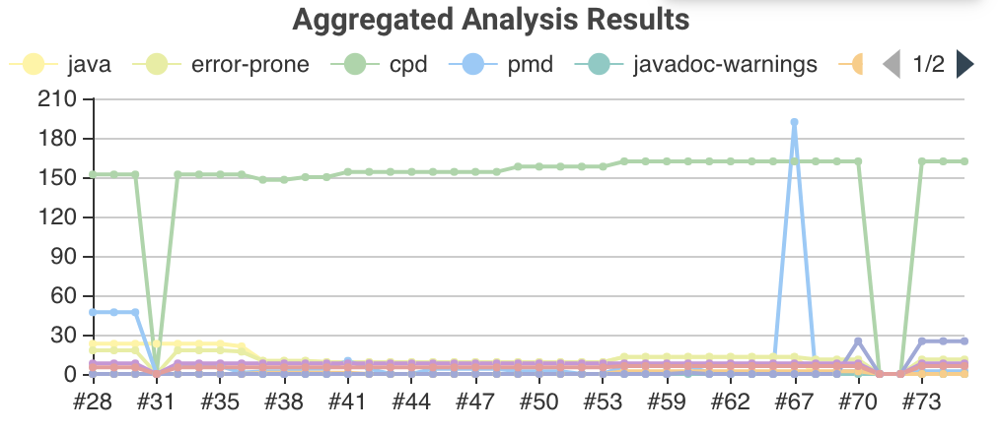
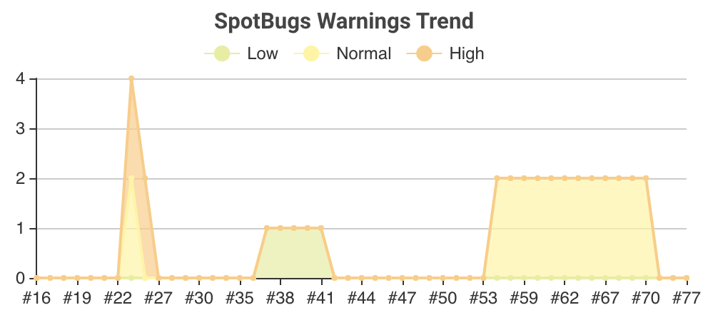